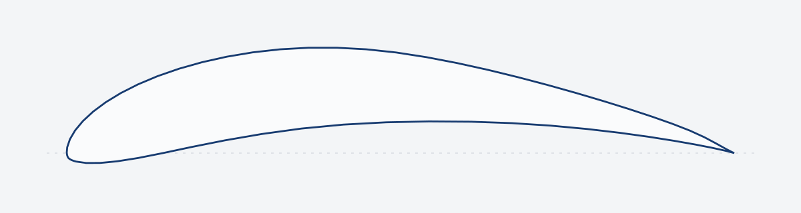
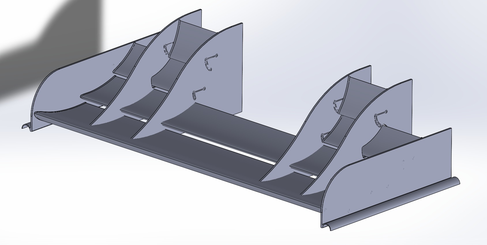
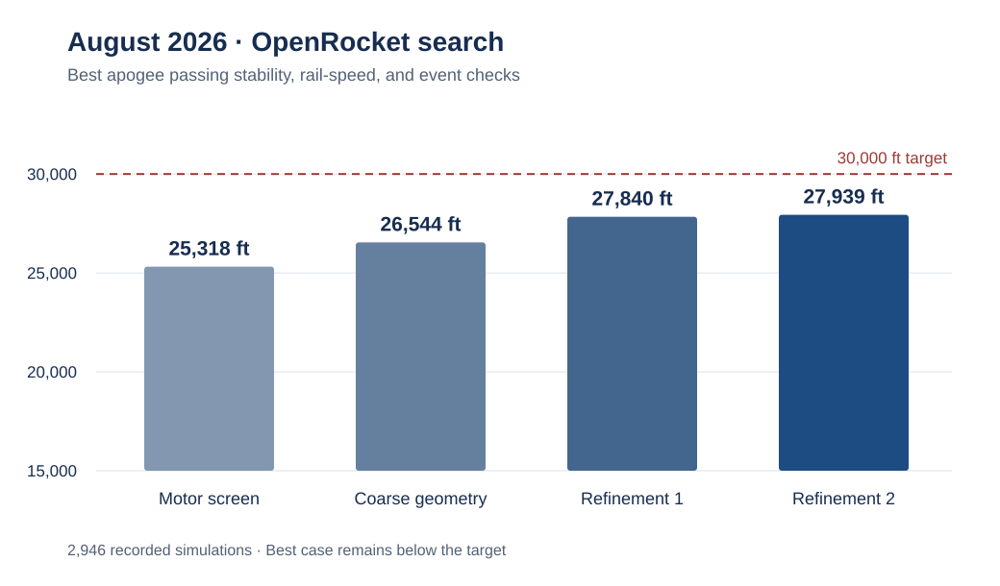

Duke University · Mechanical and Aerospace Engineering · 2029
Daniel Wang.
I work on race-car aerodynamics, rocket flight simulations, and carbon-fiber manufacturing at Duke.

Portfolio
Selected work

Formula SAE front wing
A split main element to manage separation, E423 profiles, and curved footplates to preserve suction under the wing.
View project
OpenRocket automation
A 2,946-case motor and geometry search with stability checks, resumable runs, and verified model exports.
View project
RocketPy modeling and staging
A staged flight model with mass accounting, coast-to-ignition handoffs, drag tables, and wind comparisons.
View project
EGR 121 design projects
Replacing an inconsistent toy release with a seesaw, adjusting printed fits, and planning an ABS molded version.
View projectExperience